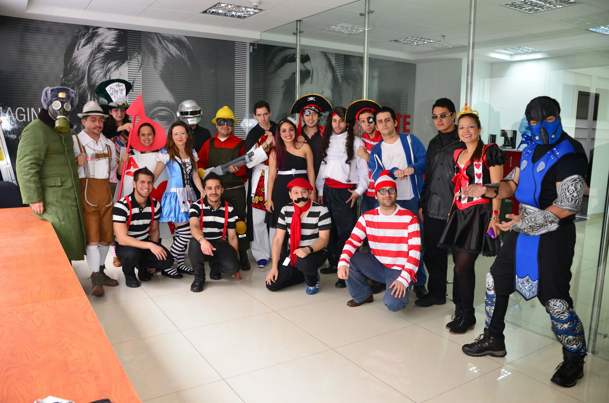
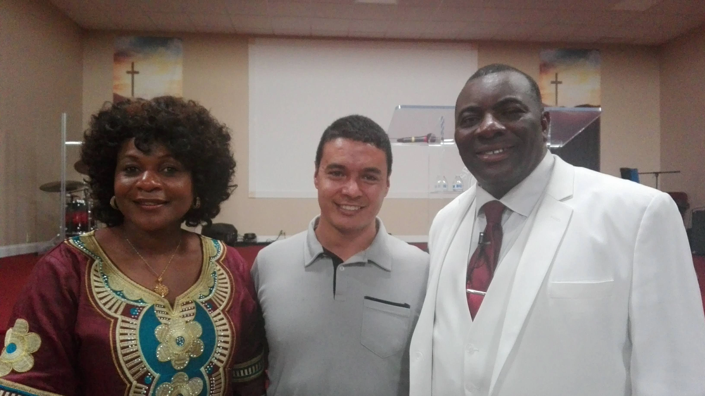

Case Study
Situation
During the COVID-19 pandemic, our client stopped the web project my team had worked on for years. As a frontend team leader, I witnessed massive layoffs, and only a few team members, including myself, were transferred to the main application team. This presented a significant personal and professional pivot.
Task
My immediate challenge was to rapidly acquire proficiency as a C# backend developer. This required a swift and intensive learning curve to support the critical needs of the main application team.
Action
Upon assignment to this new role, I proactively requested a dedicated mentor from the company. Together, we established a structured learning plan complete with a schedule, clear milestones, and deadlines. While colleagues offered extensive documentation, I prioritized this hands-on, guided approach, recognizing that metacognition through practical application and teaching would accelerate my learning more effectively.
Mentoring & Learning Outcomes
This invaluable mentorship fostered significant growth by:
- Identifying transferable concepts between frontend and backend languages.
- Deepening my understanding of design and architecture patterns.
- Refining task breakdown methodologies, balancing client needs for both speed and quality.
- Improving my ability to articulate project timelines and scope effectively.
Result
Despite the initial estimate being exceeded by only two weeks, the foundational skillset acquired proved highly sustainable and impactful.
As a direct result, I not only significantly reduced the team's dependency on other peers for feature completion but also added substantial value by implementing key improvements, including:
- Comprehensive unit testing coverage
- Strategic use of Lambda functions
- Applying Inversion of Control (IoC) principles
These additions, alongside other strategic architectural improvements, simplified our codebase, enhanced readability, reduced technical debt, and improved overall maintainability.